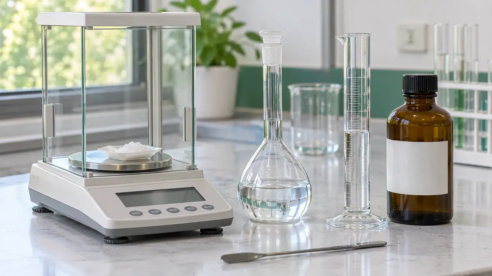

Química básica
Concentración porcentual: cómo calcular % p/p, % p/v y % v/v
Las fórmulas del % p/p, % p/v y % v/v, cómo pasar de porcentaje a molaridad con la densidad, el error más común y cuatro ejemplos resueltos: NaOH, solución salina, etanol y ácido sulfúrico.

La concentración porcentual indica cuánto soluto hay en 100 partes de solución (o disolución): % p/p = g de soluto / g de solución × 100; % p/v = g de soluto / mL de solución × 100; % v/v = mL de soluto / mL de solución × 100. Puedes resolver los tres casos con la calculadora de porcentaje p/p, p/v y v/v.
La etiqueta de un frasco de ácido dice «37 %». Un protocolo pide «NaCl al 0,9 %». Una botella de alcohol indica «70 % vol». Las tres cifras son concentraciones porcentuales, pero no significan lo mismo, y confundirlas es uno de los errores más comunes al preparar soluciones, tanto en clase como en el laboratorio.
En esta guía aprenderás a calcular los tres tipos de concentración porcentual, cuándo se usa cada uno, cómo convertir entre ellos y cuatro ejemplos resueltos paso a paso.
¿Qué es la concentración porcentual?
La concentración porcentual indica cuánto soluto hay en 100 partes de solución: 100 g o 100 mL, según el tipo. Es la forma más intuitiva de expresar una concentración porque no requiere conocer la masa molar del soluto.
Antes de calcular, conviene tener claros tres términos:
- Soluto: la sustancia que se disuelve (sal, azúcar, ácido, etanol).
- Solvente (disolvente): el medio en el que se disuelve, casi siempre agua.
- Solución: la mezcla final. Su masa es la suma de la masa de soluto y la de solvente (los volúmenes, en cambio, no siempre se suman).
Tipos de concentración porcentual: % p/p, % p/v y % v/v
| Tipo | Otros nombres | Qué expresa | Uso típico |
|---|---|---|---|
| % p/p | % m/m, porcentaje en masa, tanto por ciento en masa, riqueza | gramos de soluto en 100 g de solución | ácidos y bases comerciales, aleaciones, alimentos |
| % p/v | % m/v, porcentaje masa/volumen | gramos de soluto en 100 mL de solución | solución salina fisiológica, reactivos de laboratorio |
| % v/v | porcentaje en volumen, % vol | mililitros de soluto en 100 mL de solución | alcoholes, bebidas, mezclas de solventes |
«p» (peso) y «m» (masa) se usan como sinónimos. En rigor, lo que se mide es masa; por eso, en España y en muchos libros de texto, se prefiere % m/m. En este artículo usamos % p/p, la forma habitual en las etiquetas de reactivos.
Porcentaje masa/masa (% p/p o % m/m)
También se llama porcentaje en masa o tanto por ciento en masa; en las etiquetas de reactivos aparece como riqueza, y la IUPAC lo expresa como fracción másica (w). Como compara dos masas, no depende de la temperatura: solo cambia si la solución pierde algún componente, por ejemplo cuando el HCl concentrado libera gas. Por eso es la forma estándar para reactivos concentrados como el HCl al 37 % o el H2SO4 al 98 %.
Porcentaje masa/volumen (% p/v o % m/v)
El volumen es el de la solución final, una vez aforada (llevada a volumen), no el del agua agregada. Un dato útil: 1 % p/v equivale a 10 g/L. A partir de los g/L, el conversor de concentración (g/L, mg/L y mol/L) hace el resto.
Porcentaje volumen/volumen (% v/v)
Se usa cuando soluto y solvente son líquidos. Atención: los volúmenes no siempre se suman. Al mezclar 50 mL de etanol con 50 mL de agua se obtienen unos 96 mL, no 100 mL. Por eso siempre se mide el soluto y se afora con solvente hasta el volumen final.
Si no quieres despejar a mano, calcula la masa de soluto, el volumen o el porcentaje con la calculadora de concentración en %.
Cómo pasar de % p/p a % p/v y a molaridad
Para pasar de masa a volumen necesitas la densidad (ρ) de la solución, en g/mL:
En soluciones acuosas diluidas la densidad es cercana a 1 g/mL y ambos valores casi coinciden. En reactivos concentrados la diferencia es grande: el HCl al 37 % p/p (ρ = 1,19 g/mL, según la etiqueta del lote) equivale a unos 44 % p/v.
Si además conoces la masa molar (Mm, en g/mol; no confundir con la M de molaridad), puedes obtener la molaridad:
% p/p × ρ da gramos de soluto por 100 mL de solución; el factor 10 los convierte en gramos por litro. La masa molar se obtiene con la calculadora de masa molar, y el resultado se puede comprobar con la calculadora de molaridad.
Para diluir un reactivo concentrado, la fórmula de dilución C₁V₁ = C₂V₂ funciona con % p/v o mol/L, pero no directamente con el % p/p, que necesita la densidad. La calculadora de dilución desde reactivo comercial hace esa conversión por ti.
Para concentraciones muy bajas resulta más práctico trabajar en ppm: 1 ppm equivale aproximadamente a 0,0001 % en soluciones acuosas diluidas. Más detalle en qué son las ppm y cómo convertirlas, o directamente con el conversor de ppm a mg/L.
Ejemplos resueltos paso a paso
Ejemplo 1: % p/p de una solución de NaOH
Se disuelven 25 g de NaOH en 225 g de agua. ¿Cuál es la concentración en % p/p?
- Calcula la masa de la solución: 25 g + 225 g = 250 g.
- Aplica la fórmula: (25 g / 250 g) × 100.
- Resultado: 10 % p/p.
Precaución: el NaOH absorbe la humedad del aire y su disolución libera mucho calor. Pésalo rápido, agrégalo al agua poco a poco y usa gafas y guantes.
Ejemplo 2: 500 mL de solución salina fisiológica (NaCl 0,9 % p/v)
- Despeja la masa: m = (% p/v × V) / 100 = (0,9 × 500 mL) / 100.
- Resultado: 4,5 g de NaCl.
- Pesa 4,5 g, disuélvelos en unos 400 mL de agua destilada, trasvasa la solución a un matraz aforado de 500 mL y afora con agua destilada.
Comprobación: 4,5 g en 0,5 L son 9 g/L, que coincide con la regla 1 % p/v = 10 g/L.
Esta solución tiene la misma composición que el suero fisiológico, pero es para uso de laboratorio: no es estéril y no es apta para uso clínico ni para aplicar en los ojos.
Ejemplo 3: 250 mL de etanol al 70 % v/v
- Volumen de etanol: (70 × 250 mL) / 100 = 175 mL.
- Mide 175 mL de etanol absoluto, pásalos a un matraz aforado de 250 mL y agrega agua hasta poco antes del aforo.
- Mezcla, deja que la solución vuelva a temperatura ambiente (unos 20 °C), porque la mezcla se calienta, y afora con agua.
No agregues simplemente 75 mL de agua: por la contracción de volumen, el total quedaría por debajo de 250 mL y la concentración sería algo mayor que 70 % v/v. Si usas etanol al 96 % v/v, el habitual en el laboratorio, necesitas 70 × 250 / 96 ≈ 182 mL.
Ejemplo 4: molaridad del ácido sulfúrico al 98 % p/p
Datos de la etiqueta: 98 % p/p y densidad 1,84 g/mL. Masa molar del H2SO4: 98,07 g/mol.
- Pasa a % p/v: 98 × 1,84 = 180,3 % p/v, es decir, 180,3 g por 100 mL o 1803 g/L.
- Divide por la masa molar: 1803 g/L ÷ 98,07 g/mol.
- Resultado: 18,4 mol/L.
Un % p/v mayor que 100 no es un error: esta solución pesa 1,84 g por mililitro, así que 100 mL contienen más de 100 g de solución.
Con el mismo procedimiento, el HCl al 37 % p/p (ρ = 1,19 g/mL; Mm = 36,46 g/mol) da 12,1 mol/L. Si necesitas diluirlo, sigue la guía Cómo preparar HCl 1 M a partir de HCl al 37 %.
Errores comunes al calcular el porcentaje de una solución
1. Dividir por el solvente y no por la solución
El denominador es siempre la solución, no el solvente. Si disuelves 10 g de sal en 100 g de agua, la solución pesa 110 g y la concentración es 9,09 % p/p, no 10 %. Para obtener una solución al 10 % p/p necesitas 10 g de sal y 90 g de agua.
2. Sumar volúmenes en % v/v
Al mezclar algunos líquidos, como el etanol y el agua, el volumen final es menor que la suma de los volúmenes. Por eso se mide el soluto y se afora con solvente hasta el volumen final.
3. Ignorar la temperatura en % p/v y % v/v
El % p/p no cambia con la temperatura; el % p/v y el % v/v sí, porque el volumen se dilata o se contrae. Afora (enrasa) a unos 20 °C, la temperatura a la que suele estar calibrado el material volumétrico.
4. No indicar el tipo de porcentaje
«Al 5 %» sin aclarar puede ser p/p, p/v o v/v. Indica siempre el tipo en etiquetas, protocolos e informes.
5. No corregir por la pureza del reactivo
Si el reactivo sólido tiene una pureza menor que el 100 %, hay que corregir la masa. La calculadora Solución desde sólido con pureza lo hace automáticamente. Para el procedimiento completo, repasa cómo preparar soluciones estándar correctamente.
Preguntas frecuentes
¿Cuál es la diferencia entre % p/p, % p/v y % v/v?
El % p/p compara masas: gramos de soluto en 100 g de solución. El % p/v indica gramos de soluto en 100 mL de solución. El % v/v indica mililitros de soluto en 100 mL de solución y se usa con líquidos, como el alcohol. Solo el % p/p no cambia con la temperatura, porque no depende de ningún volumen.
¿Es lo mismo % p/p que % m/m?
Sí. «Peso» y «masa» se usan como sinónimos en este contexto: ambas expresiones indican gramos de soluto por cada 100 g de solución (o disolución). En España y en muchos libros de texto se prefiere % m/m o «tanto por ciento en masa»; en las etiquetas de reactivos es habitual % p/p o «riqueza».
¿Cómo se pasa de % p/p a molaridad?
Se multiplica el porcentaje por la densidad de la solución (g/mL) y por 10 para obtener gramos por litro, y el resultado se divide por la masa molar. Para H2SO4 al 98 % p/p (ρ = 1,84 g/mL; Mm = 98,07 g/mol): 98 × 1,84 × 10 / 98,07 = 18,4 mol/L. Sin la densidad no se puede convertir.
¿Cómo se pasa de % p/v a g/L?
Se multiplica por 10, porque 1 % p/v son 1 g en 100 mL, es decir, 10 g en un litro. La solución salina al 0,9 % p/v contiene 9 g/L de NaCl. Para concentraciones muy bajas conviene trabajar en mg/L o ppm: una solución al 0,01 % p/v equivale a 100 mg/L.
¿Qué significa una solución «al 5 %» si no se indica el tipo?
Depende del contexto. En reactivos líquidos concentrados suele ser % p/p; en soluciones clínicas y biológicas, % p/v, y en alcoholes y bebidas, % v/v. Si la etiqueta no lo aclara, hay que consultar la ficha técnica o el certificado de análisis antes de hacer cualquier cálculo con ese valor.
Fuentes consultadas
- Skoog, D. A., West, D. M., Holler, F. J. y Crouch, S. R. (2014). Fundamentos de química analítica (9.ª ed.). Cengage Learning.
- Harris, D. C. (2016). Análisis químico cuantitativo (9.ª ed.). Reverté.
- Cohen, E. R. et al. (2007). Quantities, Units and Symbols in Physical Chemistry (IUPAC Green Book, 3.ª ed.). RSC Publishing. (Fracción másica y notación de concentraciones.)
- Rumble, J. R. (ed.). CRC Handbook of Chemistry and Physics (103.ª ed.). CRC Press. (Densidades de soluciones acuosas de ácidos y de mezclas etanol-agua.)
¿No quieres despejar fórmulas a mano? Elige el tipo de porcentaje, introduce dos datos y la calculadora te dará el tercero: la cantidad de soluto (masa o volumen), la de solvente (en % p/p) o la de solución final (en % p/v y % v/v), o el porcentaje.
Usar la calculadora de porcentaje →